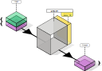
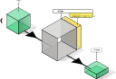
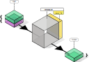
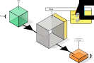
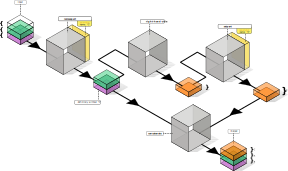
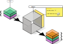

Scripting
We now have rules and fact sets (that rules always operate on) defined. Next, we’ll define some basic rules, that are simple in itself, but prove to be a useful toolbox to create higher level rules.
Those higher level rules are closer to the domain we want to model, and are therefore more interesting ultimately.
We’ll work up rules to become a programming language in itself. Not one that let’s you create games, but one dedicated to create logical systems.
warning
This chapter is about making basic things available for creating rules in a sensible way. This may be boring if you don’t feel too puristic about this endeavor. If you already believe that simple things such as “selecting facts based on some property”, or “counting them” and assigning them to some variable will be possible with factsets and the outlines for rules, you can make an evasive maneuver here, and skip boring/founding definitions. After all: n = getpart("persons"); filter(age > 18); count clearly means the number of persons older than 18, stored in a factset named “n”, right?
Basic rules
Remember that we defined fact sets to have certain functionality baked in. Independent of whatever rules we are going to create, fact sets can do certain things themselves.
| function name | argument | returns | description |
|---|---|---|---|
fs_create | facts | factset | create a new factset from the facts provided (as list, iterator, …) |
fs_iterate | - | list of facts | retrieve all fact objects contained |
fs_count | - | integer | retrieve the number of facts contained |
fs_filter | predicate | factset | retrieve only the facts that pass a given predicate/test |
fs_part_names | - | list of string | retrieve all available part names this factset contains |
fs_get_part | part name | factset | retrieve only the facts from a given part name |
fs_set_part | part name | factset | all facts now belong to a given part |
fs_remove_part | part name | factset | a factset containing all parts, but the one provided |
But those functions are not what a user of our rule engine will (often) use directly, though. Rules, as discussed before, are what a user applies to define some logic.
Some of those fact set functions are wrapped in rules, so they are accessible and can be reused easily.
| rule name | argument | parameter | returns | description |
|---|---|---|---|---|
count | factset | - | factset | fact set with single fact, with term n = … |
filter | factset | predicate | factset | a subset of facts that obey the predicate |
get_part | factset | part name | factset | a factset with just the given part |
set_part | factset | part name | factset | a factset with all facts from all parts under a new name |
remove_part | factset | part name | factset | a factset containing all parts, but the one provided |
Note that:
- the rule name is not prefixed with
fs_(to denote the fact set variant). - those rules internally use the fact set functions
- the argument is always a factset
- the result is always a factset
- a fixed parameter can be used (the predicate function, or part name) to instantiate the rule.
Count rule
Determine the number of facts in the provided factset (independent of what part they belong to).

Filter rule
Select just the facts that hold up to some test. This test (i.e. a predicate) looks at a certain field in the term of a fact (e.g. “age”) and compares that to constant.

Get part rule
Separate out all facts under a certain label, i.e. the part name.
Remove part rule
Separate out all facts that are not under a certain label, i.e. the part name.

Set part rule
Assign a new part name to all the facts in the factset.

First examples with rules
At this point we can already create some meaningful rules, given the basic ones we just introduced.
Consider the following factset that contains a part persons: \(FS_{persons}\). We just show the terms as rows (not the metadata of the fact).
| name | hair | weight | age | gender |
|---|---|---|---|---|
| Homer | short | 250 | 36 | male |
| Marge | long | 150 | 35 | female |
| Bart | short | 90 | 10 | male |
| Lisa | middle | 78 | 8 | female |
| Maggie | middle | 20 | 1 | female |
| Abe | short | 170 | 70 | male |
| Selma | long | 160 | 41 | female |
| Otto | long | 180 | 38 | male |
| Krusty | middle | 200 | 45 | male |
This determines the number of people:
\[ \texttt{count}(FS_{persons}) \]
Resulting in:
| n |
|---|
| 9 |
This selects the children:
\[ \texttt{filter}_{age \leq 12 }(FS_{persons}) \]
| name | hair | weight | age | gender |
|---|---|---|---|---|
| Bart | short | 90 | 10 | male |
| Lisa | middle | 78 | 8 | female |
| Maggie | middle | 20 | 1 | female |
And this the number of children, specifically taken from a part:
\[ \texttt{count} (\texttt{filter}_{age \leq 12 }(\texttt{getpart}_{persons}(FS_{persons}))) \]
| n |
|---|
| 3 |
Compose using Then
The last example shows we have to \( nest(every(functioncall(FS)))) \). Function composition is more convenient to click together two rules, and make it a new rule object (instead of the resulting value).
\[ \texttt{count} \circ \texttt{filter}_{age \leq 12} \]

Here, \( \circ \), is the usual mathematical way to denote function (rule) composition. It performs the right-most function first, then the one on the left, etc.
In programming, we would often like to think in data flows. First do this, then that, followed by that, etc. It is the same as function composition, but then works in the opposite direction. We will use the symbol then.
\[ \texttt{filter}_{age \leq 12} ~ \texttt{then} ~ \texttt{count} \]

Saying: filter them out by age, then count.
So far we have seen rules that do something on data (factsets). But can create then as a rule in itself.
\[ \texttt{then}_{rule_a, rule_b} = rule_a ~ \texttt{then} ~ rule_b \]
then has two parameters that are rules themselves (e.g. getpart and count). When the then rule is applied, it evaluates the first rule \( rule_a \), and applies the second parameter, \( rule_b \) on that.
And since we will use then a lot, it is better to keep it short. The semicolon, ;, means then as well.
\[ \texttt{filter}_{age \leq 12} ~ \texttt{;} ~ \texttt{count} \]
note
It may not sink in directly, but is elegant to learn that composition of rules is a rule itself.
Assigning variables/part names
At this point we have rules, that can be chained together into a single bigger rule. To improve readability (and therefore correctness and maintainability), we would want to give those rules meaningful names. For example:
\[ \texttt{children} = \texttt{getpart}_{persons} ~ \texttt{then} ~ \texttt{filter}_{age \leq 12} ~ \texttt{then} ~ \texttt{count} \]
It turns out we can implement this assignment as a rule itself. When applied to a factset, \( FS \):
- It removes the part with the variable name (the left-hand-side). Maybe there was no such part, in which case it is unchanged. This reduced factset is now called \( FS’ \).
- It evaluates the right-hand-side, which is a (possibly composed) rule, that create a new factset.
- That factset will get the variable name as part name, \(FS_{var}\).
- The result is \( FS’ \) concatenated with \(FS_{var}\)1.
As you can see here, it is build up from basic rules we already know.

And this is a more compact way to visualize the assign rule:

note
The same as for then rules… funny that you can create new variables entirely from the definition of rules and factsets, right? At least from a programming laguage perspective, that is.
Celebrating axiomatic thinking
When we first discussed facts, factsets and rules, it probably seemed a bit boring. But here we are: we have built a logical programming language,from those ingredients and nothing more.
The fact that we can just keep transforming factsets with rules, and get additional high level features like assigning intermediate variables and chaining rules to keep things organized almost for free, is great.
Extending the toolbox
We have some first rules to recombine parts: getpart, removepart, concatenate, that allow us to recombine fact sets by things from here and add them there, all with a single factset argument and result. There are many useful transformations thinkable, that may come in handy when defining higher level rules.
Aggregations
An aggregate rule is a function where multiple values are processed together to form a single summary statistic.
Parameters:
- field to group by (e.g. “gender”)
- field for the value to use (e.g. “age”)
- function to reduce the selected value into a single one
Example: \[ \texttt{aggregate}_{gender, age, max} \]
| gender | aggregate_max_age |
|---|---|
| male | 70 |
| female | 41 |
Arithmetic
Apply an arithmetic of two fields of two factset selections.
Parameters:
- the function to apply (e.g. +, -, *, /)
- the rule that selects the first argument (the first field of the first fact’s term is used)
- the rule that selects the second argument (the first field of the first fact’s term is used)
Example:
This factset contains two parts:
- revenue
| r | project |
|---|---|
| 5 | A |
| 4 | B |
| 3 | C |
- expense
| e |
|---|
| 1 |
| 2 |
Then
\[ \texttt{arithmetic}_{-, \texttt{getpart}(“revenue”), \texttt{getpart}(“expense”)} \]
yields:
| x |
|---|
| 4.0 |
| 2.0 |
Const
Some constant value. Always evaluates to the given factset, ignoring its factset input argument. This is a way to convert a factset into a rule.
Example:
If we have a factset with an “expense” part:
| e |
|---|
| 1 |
| 2 |
and want to use arithmetic to add 1, this number is first wrapped in a term ({x: 1}), then in a fact, then into a factset with this fact, and then to a rule that is expected as parameter.
\[ \texttt{arithmetic}_{-, \texttt{getpart}(“revenue”), \texttt{const}(1)} \]
yields:
| x |
|---|
| 2 |
| 3 |
Identity
A rule that does nothing to its input argument and just returns it. This sounds unnecessary, but some other rules may require a rule that creates a selection of some sort. If you want to just want to use all provided facts, identity can be used to achieve that.
If we have a factset with an “expense” part:
| e |
|---|
| 1 |
| 2 |
and want to use arithmetic to add 1, instead of writing
\[ \texttt{arithmetic}_{-, \texttt{getpart}(“revenue”), \texttt{const}(1)} \]
One can as well write:
\[ \texttt{arithmetic}_{-, \texttt{identity}, \texttt{const}(1)} \]
to yield:
| x |
|---|
| 2 |
| 3 |
Join
Join two selections on the given field. It merges two facts into one.
Given this factset that defines titles by gender, \(FS_{titles}\),
| gender | title |
|---|---|
| male | Mr. |
| female | Ms. |
we can augment \(FS_{persons}\) with this extra infomation using:
\[ \texttt{join}_{gender}(FS_{persons}, FS_{titles}) \]
| name | hair | weight | age | gender | title |
|---|---|---|---|---|---|
| Homer | short | 250 | 36 | male | Mr. |
| Marge | long | 150 | 35 | female | Ms. |
| Bart | short | 90 | 10 | male | Mr. |
| Lisa | middle | 78 | 8 | female | Ms. |
| Maggie | middle | 20 | 1 | female | Ms. |
| Abe | short | 170 | 70 | male | Mr. |
| Selma | long | 160 | 41 | female | Ms. |
| Otto | long | 180 | 38 | male | Mr. |
| Krusty | middle | 200 | 45 | male | Mr. |
Select fields
Just pick certain fields (columns) from each fact’s terms.
\[ \texttt{select}_{age, hair}(FS_{persons}) \]
yields:
| age | hair |
|---|---|
| 36 | short |
| 35 | long |
| 10 | short |
| 8 | middle |
| 1 | middle |
| 70 | short |
| 41 | long |
| 38 | long |
| 45 | middle |
Return if
Return if helps handle different cases to determine a returned value.
Say we are in front of a traffic light, then green means ‘go’ and red means “stop”, or “don’t go”.
In our rule engine, we can say there is a traffic light factset:
| light |
|---|
| “red” |
or
| light |
|---|
| “green” |
and we want to derive a new fact set:
| go |
|---|
| false |
or
| go |
|---|
| true |
In most programming languages you can do something like this:
if (light == "green") {
return {"go": True}
}
return {"go": False}
So, if some condition holds, return the corresponding value, else just continue with the next lines. In this case that turns out to be returning another value. Returning is as much delivering the “final value”.
Writing
if *condition* {
return expression
}
in similar function as before, we get:
\[ \texttt{return_if}(condition, rule) \]
Here
- condition is a predicate; a test that takes a factset as an argument and returns
trueorfalse. It is a little expression that says: this property must equal this or that. Or: this must be greater than some value. In our example of persons:age > 18, or so. - expression is some value you want to use later. In this case a go or no go value. As a factset of course, since this is the way we do things.
A rule is often composed: do something then something else then more… With a “return_if” somewhere in this chain, we can decide to stop halfway, if the conditions are right. It lets you define shortcuts in you logic flow.
-
In the chapter about factsets we briefly mentioned the efficient concatenated factset, used here. ↩